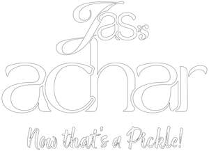

Trade Mark Journal No.2026/012 20 March 2026
UK00004345064 24 February 2026 (29,30,43)

- Class 29
- Meat burgers; preserves, pickles; mixed pickles; vegetable salads; cooked vegetables; prepared vegetables dishes; spicy pickles; potato chips; curd cheese; yogurt drinks; roast lamb; cooked meat dishes; poultry salads; chicken; pre-cooked curry stew; fruit salads; pickles; minced meat; vegetable burgers; roast poultry; potato salads; lamb skewers; fritters; cooked poultry; pieces of chicken for use as a filling for sandwiches; chicken legs; pork; chicken wings; meat; pickled ginger; cooked chicken; potato fritters; chicken pieces; vegetable-based snack food; fried chicken; fried meat; lentils; pickled fruits; pickled vegetables; prepared salads; chicken burgers; vegetable, cooked; curd; yogurt; chips (potato); burgers; cooked spinach; pickled radishes; pickled garlic; processed chickpeas; preserved chilli peppers; chicken breast fillets.
- Class 30
- Black tea; kheer mix (rice pudding); decaffeinated coffee; sweets; chutneys (condiments); chocolate coffee; tea beverages; chutneys; coffee drinks; rice porridge; semolina; popadoms; vermicelli (noodles); black tea (english tea); naan bread; puddings; pita bread; sweet pickle (condiments); chilli sauces; curry sauces; cappuccino; chai tea; chicken wraps; instant coffee; flour based savoury snacks; sweetmeats (candy); flapjacks; savoury sauces, chutneys and pastes; flavourings made from pickles; sauces for chicken; sandwiches containing salad; sweetmeats; kebab sauces; sandwiches; toasted sandwiches; halvah; chickpea flour; spicy sauces; achar pachranga (fruit pickles); achar pachranga (vegetable pickle); pickle relish; dessert puddings; steamed rice; tea; chicken sandwiches; papads; vermicelli; tea beverages with milk; chocolates brownies; curry pastes; sauces; preserved ginger as a condiment; samosas; rice vermicelli; curry spices; curry (seasoning); semolina pudding.
- Class 43
- Serving food and drinks for guests; serving food and drinks; food preparation services; provision of food and drink in restaurants; outside catering services; bar and restaurant services; food and catering for cocktail parties; fast-food restaurant services; catering services for company cafeterias; arranging of wedding receptions (food and drinks); providing food and drinks for guests in restaurants; mobile catering; preparation of food and beverages; catering services for the provision of food; take-away food and drinks services; outside catering; preparation of food and drink; take-away restaurant services; mobile catering services; food and drink catering for banquets; restaurant and bar services; organisation of catering for birthday parties; takeaway food services; self-service restaurant services.
Dad’s Kitchen LTD